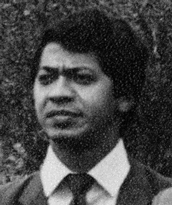

Natural de Itaguatins/TO, Jales Marinho cursou o ensino médio em Tocantinópolis e Comunicação Social pela Universidade Federal de Goiás (UFG). Atuou como redator nos jornais Cinco de Março, Folha de Goyaz, Opção e Top News, em Goiânia, e no Correio Braziliense, em Brasília. Foi também assessor de imprensa da presidência da Caixa Econômica Federal. Exerceu as funções de editor do jornal O Tocantins e da revista Estado do Tocantins, ambos mantidos pela Conorte — entidade na qual atuou como diretor cultural. Foi candidato a deputado estadual pelo Partido dos Trabalhadores (PT).
Como jornalista, foi defensor ativo da criação do Estado do Tocantins, destacando-se na mobilização em torno da causa, especialmente através da imprensa. Em suas palavras, "o papel desempenhado pela imprensa da região Norte foi útil ao processo de emancipação do Tocantins", reconhecendo também a relevância de veículos regionais como O Regional, Correio do Norte e Paralelo 13 na consolidação do sentimento emancipacionista.
